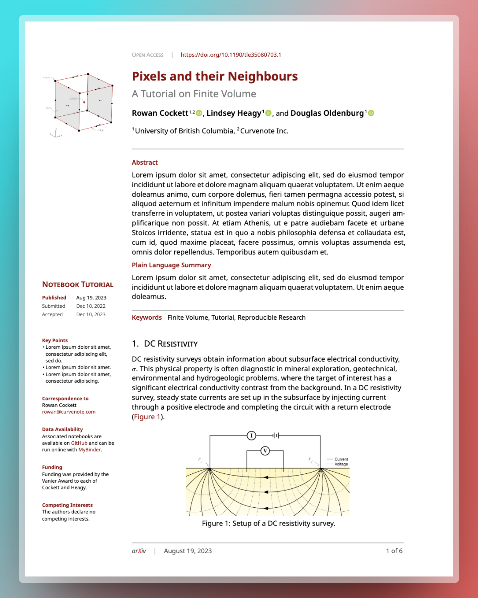

1 Introduction
1.1 Why Take This Course in the Age of AI?
Okay, let’s be honest. You signed up to study Ecology and Evolutionary Biology, not Computer Science. You probably envision yourself out in the field, knee-deep in mud, observing the subtle interactions of ecosystems—not stuck behind a screen, wrestling with semicolons and syntax errors. And now, with these fancy new AI tools that seem to do everything but your taxes, you might be wondering: why bother learning this stuff at all? Can’t a chatbot handle it all—generate analyses, whip up some plots, and call it a day?
Well, you’re not wrong to wonder. Technology is reshaping everything, and science is no exception. But here’s the thing: just as biologists in the past had to master the microscope, today’s biologists need a strong foundation in computing. This course isn’t about turning you into a programmer; it’s about equipping you with the skills to make technology work for you—so you’re the one in control.
And don’t worry, this class won’t throw you into the deep end. We’re going step by step, almost like learning a new language. (Good news: coding languages are much easier than human languages!) Examples, exercises, and patience will be our path.
Now, back to those AI tools. Yes, they’re handy, but relying on it without understanding the basics is like cooking from a recipe in a language you barely know. Sure, you might finish the dish, but there’s a good chance you’ll miss something critical—maybe misinterpret a step, add the wrong ingredient, or end up with a surprise result. Becoming computationally literate helps you recognize when AI has gone off track, saving you from mess you’d rather avoid.
I get the allure of the “easy button.” But investing in these skills now will pay off many times over. You’ll be a more efficient, happier researcher—and, franky, it will increase your chances of publishing in high-profile journals.
1.2 What You’ll Learn
We will cover the following topics in this course, which I believe are the most essential computing skills.
1.2.1 Fluency with R
What is our weapon of choice in this course? The R programming language. It is not the most well-polished language. It is not the fastest language. It is not the most user-friendly language. So, why R? Well, it is the lingua franca in our community. The computational tools in ecology are largely R-based. So, if you want to tap into this wealth, you’ll need a working knowledge of R.
Not sold on R? You could try Julia, a newer language that’s faster, more elegant, and gaining popularity. The syntax is similar enough to R to make it a relatively easy transition, and it can even load R packages, so you can have the best of both worlds.
R has also evolved dramatically in the past decade with the rise of the tidyverse. When I started grad school, I absolutely hated using R. has completely changed how I felt about this language. It introduced a whole new way of handling and visualizing data — a way that feels logical and intuitive — and I stringly believe that it is the right approach of thinking about data manipulation and plotting (yes I meant the).
The tidyverse revolution is largely thanks to Hadley Wickham, whose contributions earned him the COPSS Presidents’ Award, the top honor in statistics.
But it’s not just him—the tidyverse is a community effort, a group of people with a shared vision (link).
1.2.2 Making Publication-Ready Figures
With ggplot2, you’ll learn the Grammar of Graphics, one of the most powerful plotting systems out there. Beyond just producing high-quality figures, it will teach you a structured approach to data visualization.
While ggplot2 is powerful, its defaults aren’t always perfect. We’ll cover design principles that enhance both the appeal and informativeness of your figures—a skill that’s invaluable since figures often make the first impression on readers. By the end of the class, you will be able to make figures like this:

1.2.3 The Art of Data Wrangling
In real-world research, data is rarely neat. Before you can start analyzing, you’ll likely spend hours organizing it into a usable format. Fortunately, dplyr and tidyr make this much easier, turning data wrangling into a clear, logical workflow.
Imagine describing your morning routine. In base R, it might look like a jumbled nest of functions: ::: {.cell}
eat(dressed(shower(brush(wakeup(you)))))::: Or, a series of confusing, intermediate variables: ::: {.cell}
you_w <- wakeup(you)
you_bw <- brush(you_w)
you_sbw <- shower(you_bw)
...::: With dplyr, however, it transforms into a straightforward, logical flow: ::: {.cell}
you |>
wakeup() |>
brush() |>
shower() |>
get_dressed() |>
eat() :::
In the tidyverse ecosystem, each step of data wrangling becomes clear, easy to follow, and—importantly—easy to debug. You’ll be introduced to a handful of core verbs, fewer than ten in total, which handle around 90% of the everyday tasks you’ll encounter. And just as promised, coding languages are easier than human languages :)
1.2.4 Scientific typsetting
Yes, Microsoft Word is great. But updating figures, managing references, or keeping layouts consistent can quickly turn into a headache. The key issue is that Word is what we call a WYSIWYG editor—What You See Is What You Get. This means you’re constantly tweaking the layout to get it just right, which is time-consuming and error-prone.
In general, it is a good idea to separate the content from the layout. There are a couple of tools to do that (including the notarious Latex). But we will focus on Quarto, a document preparation system crafted for researchers. It lets you seamlessly integrate code, references, and figures, generating polished outputs in formats like Word or LaTeX. In the end of the class, you will be able to produce documents like this with one click in R:

While Quarto is powerful, sometimes for the best layout, we need more special tools. Latex is one, but it is outdated (you need to install ). We will briefly touch Typst, a modern alternative to LaTeX that’s powerful yet more intuitive. It offers a user-friendly way to create beautiful, publication-ready documents without the steep learning curve of LaTeX, giving you a smooth and efficient experience in scientific typesetting.
1.2.5 Reproducible Research
As a data editor in a journal, I’m often surprised by how many papers are difficult to reproduce. This is a big problem in science. In this course, you’ll learn to make your research fully reproducible, which benefits not only the scientific community but also you—it makes it easier to revisit and build upon your work.
We’ll cover version control with Git and GitHub to help you track changes, back up your work, and collaborate with others. Additionally, we’ll dive into specific techniques in R that support reproducible workflows.